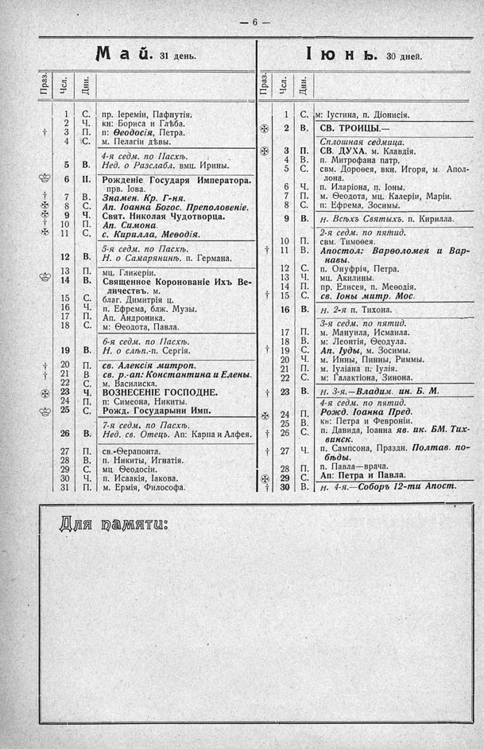

Лист источника 52
Скан

Распознанный текст
- 6 -
Май. 31 день.
Праз. Чсл. Дни.
1 С. пр. Іереміи, Пафнутія.
2 Ч. кн: Бориса и Глѣба.
† 3 П. п: Ѳеодосія, Петра.
4 С. м. Пелагіи дѣвы.
4-я седм. по Пасхѣ.
5 В. Нед. о Разслабл. вмц. Ирины.
6 П. Рожденіе Государя Императора. прв. Іова.
† 7 В. Знамен. Кр. Г-ня.
✠ 8 С. Ап. Іоанна Богос. Преполовеніе.
† 9 Ч. Свят. Николая Чудотворца.
† 10 П. Ап. Симона.
11 С. с. Кирилла, Меѳодія.
5-я седм. по Пасхѣ.
12 В. Н. о Самарянинѣ. п. Германа.
13 П. мц. Гликеріи.
14 В. Священное Коронованіе Ихъ Ве-
личествъ. м.
15 С. благ. Димитрія ц.
16 Ч. п. Ефрема, блж. Музы.
17 П. Ап. Андроника.
18 С. м: Ѳеодота, Павла.
6-я седм. по Пасхѣ.
19 В. Н. о слѣп.-п. Сергія.
† 20 П. св. Алексія митроп.
† 21 В св. р.-ап: Константина и Елены.
22 С. м. Василиска.
✠ 23 Ч. ВОЗНЕСЕНІЕ ГОСПОДНЕ.
24 П. п: Симеона, Никиты.
25 С. Рожд. Государыни Имп.
7-я седм. по Пасхѣ.
26 В. Нед. св. Отецъ. Ап: Карпа и Алфея.
27 П. св.-Ѳерапонта.
28 В. п. Никиты, Игнатія.
29 С. мц. Ѳеодосіи.
30 Ч. п. Исаакія, Іакова.
31 П. м. Ермія, Философа.
Іюнь. 30 дней.
Праз. Чсл. Дни.
1 С. м: Іустина, п. Діонисія.
✠ 2 В. СВ. ТРОИЦЫ.—
Сплошная седмица.
✠ 3 П. СВ. ДУХА. м. Клавдія.
4 В. п. Митрофана патр.
5 С. свм. Дороѳея, вкн. Игоря, м. Апол-
лона.
6 Ч. п. Иларіона, п. Іоны.
7 П. м. Ѳеодота, мц. Калеріи, Маріи.
8 С. п: Ефрема, Зосимы.
9 В. Н. Всѣхъ Святыхъ. п. Кирилла.
2-я седм. по пятид.
10 П. свм. Тимоѳея.
† 11 В. Апостол: Варѳоломея и Вар-
навы.
12 С. п. Онуфрія, Петра.
13 Ч. мц. Акилины.
14 П. пр. Елисея, п. Меѳодія.
† 15 С. св. Іоны митр. Мос.
16 В. Н. 2-я п. Тихона.
3-я седм. по пятид.
17 П. м. Мануила, Исмаила.
18 В. м: Леонтія, Ѳеодула.
† 19 С. Ап. Іуды, м. Зосимы.
20 Ч. м. Инны, Пинны, Риммы.
21 П. м. Іуліана п. Іулія.
22 С. м: Галактіона, Зинона.
† 23 В. Н. 3-я.—Владим. ин. Б. М.
4-я седм. по пятид.
✠ 24 П. Рожд. Іоанна Пред.
25 В. кн: Петра и Февроніи.
† 26 С. п. Давида, Іоанна яв. ик. БМ. Тих-
винск.
† 27 Ч. п. Сампсона, Праздн. Полтав. по-
бѣды.
28 П. п. Павла—врача.
✠ 29 С. Ап: Петра и Павла.
† 30 В. Н. 4-я.—Соборъ 12-ти Апост.
Для памяти: